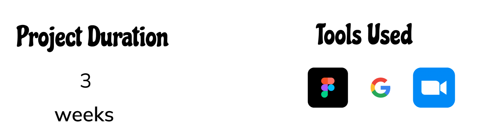

Rooted is designed to connect volunteer conscious individuals with restaurants
that contribute to helping the community
According to the USDA, more than 38 million people, including 12 million children, in the United States are lacking reliable access to a sufficient quantity of affordable, nutritious food. While each year 108 million pounds of food is wasted In the US. There should be no reason we cannot bridge the gap between those with excess and those in need.
We created Rooted with the belief that helping individuals connect with restaurants who donate their excess food is essential for minimizing food waste in the community. Rooted provides that link from individual to community. Making it simple to participate in something that will benefit everyone.
We utilized in person interviews, virtual interviews, and online surveys to really understand the market and ensure we are impacting our users by addressing and potentially solving a problem they face.